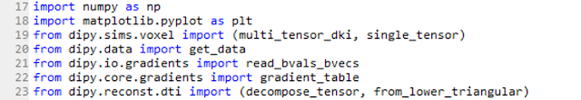
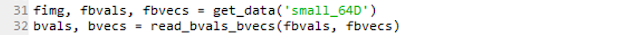
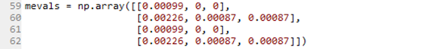
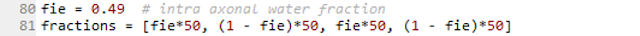
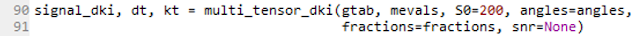

Progress Report (DKI simulations merged and DKI real data fitted)#
I have done great progresses on the 2 last weeks of coding!!! In particular, two major achievements were accomplished:
By solving the couple of problems mentioned on my previous post, the DKI simulations were finally merged to the Dipy’s master repository.
The first part of the reconstruction modules to process DKI in real brain data was finalized.
The details of these two achievements and the project’s next step are posted on the below sections.
1) DKI simulations on Dipy’s master repository#
Just to give an idea of the work done, I am posting an example of how to use the DKI simulations that I developed. More details on the mathematical basis of these simulations can be found here.
1.1) Import python modules and defining MRI parameters#
First of all, we have to import relevant modules (see code lines below). The main DKI simulations function multi_tensor_dki can be imported from the Dipy simulations’ sub-module dipy.sims.voxel (line 19 shown below).
To perform the simulations, some parameters of the MRI acquisition have to be considered. For instance, the intensity of the MRI’s diffusion-weighted signal depends on the diffusion-weighting used on the MRI scanner (measured as the b-value) and the directions that the diffusion measurement are done (measured as the b-vectores). This information, for example, can be obtain from Dipy’s real dataset samples.
Dipy’s dataset ‘small_64D’ was acquired with only one diffusion-weighting intensity. Since DKI requires data from more than one non zero b-value, a second b-values is artificially added.
To convert the artificial produced b-values and b-vectors to the format assumed by Dipy’s functions, the function gradient_table has to be called.
1.2) Defining biological parameters#
Having all the scanner parameters set, the biophysical parameters of the simulates have to be defined.
Simulations are based on multi-compartmental models, which allow us to take into account brain’s white matter heterogeneity. For example, to simulate two crossing fibers with two different media (representing intra and extra-cellular media), a total of four heterogeneous components are taken into account. The diffusion parameters of each compartment are defined below (the first two compartments correspond to the intra and extra cellular media for the first fiber population while the others correspond to the media of the second fiber population).
The orientation of each fiber is saved in polar coordinates. To simulate crossing fibers at 70 degrees the compartments of the first fiber are aligned to the x-axis while the compartments of the second fiber are aligned to the x-z plane with an angular deviation of 70 degrees from the first one.
Finally, the volume fractions of the compartment are defined.
1.3) Using DKI simulation main function#
Having defined the parameters for all tissue compartments, the elements of the diffusion tensor (dt), the elements of the kurtosis tensor (kt) and the DW signals simulated from the DKI model (signal_dki) can be obtained using the function multi_tensor_dki.
As I mentioned in my previous post, these simulations are useful for testing the performance of DKI reconstruction codes that I am currently working on. In particular, when we apply the reconstruction modules to the signal_dki, the estimated diffusion and kurtosis tensors have to match the ground truth kt and dt produced here.
2) Progresses on the development of the DKI reconstruction module#
Finalizing DKI reconstruction module is the milestone that I proposed to achieved before the mid-term evaluation. Basically, the work done on this is on schedule!
Since DKI is an extension of DTI, classes of the DKI modules were defined from inheritance of the classes defined on Dipy’s DTI module (a nice post can be found here for more details on class inheritance). Having established this inheritance, DKI modules are compatible to all standard diffusion statistical measures previously defined in Dipy.
I carried on with the development of the DKI module by implementing the estimation of the diffusion and kurtosis tensors from the DKI model. Two strategies were implemented - the DKI’s ordinary linear least square (OLS) solution, which corresponds to a simple but less computational demanding approach, and the weighted DKI’s linear least square (WLS) solution, which is considered to be one of the most robust estimation approaches in the recent DKI literature.
Currently, I am validating DKI implementation using the nose testing modules. Both implementations of the OLS and WLS solutions seem to produce the ground truth diffusion and kurtosis tensors when applied on the diffusion signal simulated from my DKI simulation modules. In addition, DKI modules are also producing the expected standard diffusion parameter images when applied to real data (see Figure 1).
Figure 1. Comparison between real brain parameter maps of the diffusion fractional anisotropy (FA), mean diffusivity (MD), axial diffusivity (AD), and radial diffusivity (RD) obtain from the DKI modules (upper panels) and the DTI module (lower panels).#
From the figure, we can see that the DT standard diffusion measures from DKI are noisier than the DTI measurements. This is a well known pitfall of DKI. Since it involves the fit of a larger number of parameters, DKI is more sensitive to noise than DTI. Nevertheless, diffusion measures from DKI were shown to have a better precision (i.e. less sensitive to bias). Moreover, as I have been mentioning on my previous posts, DKI allows the estimation of the standard kurtosis measures.
3) Next Steps#
Before the mid-term evaluation, a first version of the DKI reconstruction will be completed with the implementation of the standard kurtosis measures, as the mean, axial and radial kurtosis from the already estimated kurtosis tensors. Details of the usage of the DKI reconstruction modules and the meaning of the standard kurtosis measures will be summarized on my next post.